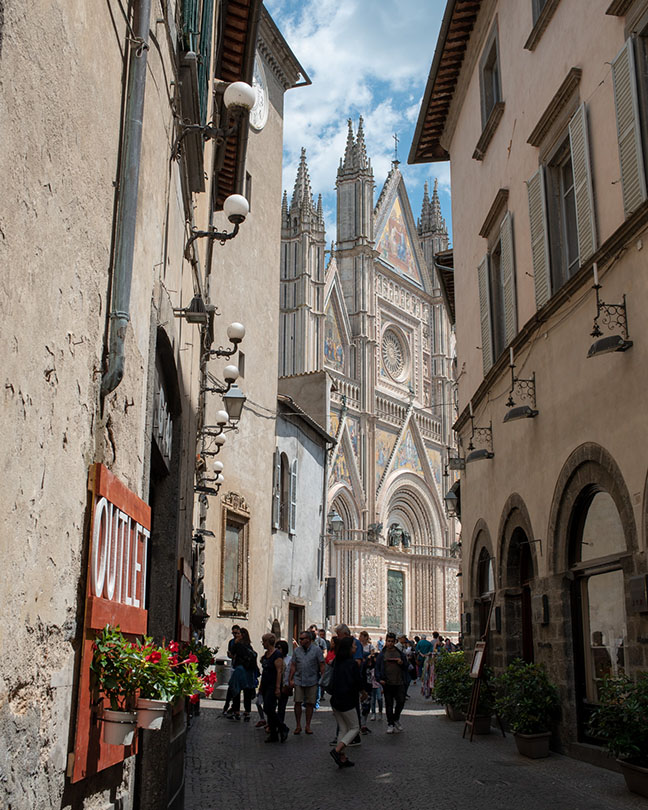

概要
トスカーナ、ラツィオ、ウンブリア州境のこのあたりはローマとフィレンツェの中間ぐらいに位置し、 チヴィタ・ディ・ バーニョレージョやオルヴィエートなどの有名な町がある。 トスカーナ南西部の小さな町は知名度は低いが、ここにもいくつの美しい小さな町がある。 これらの町は凝灰岩という火山灰が堆積されて形成された岩石の上にあり、 紀元前にエトルリア人により作られ、中世に発展した歴史をもつ。
旅程
- 一日目: チヴィタ・ディ・ バーニョレージョに午後到着。
- 二日目: オリビエートを観光し、近郊のオルヴィエートが見える町に泊。
- 三日目: トスカーナの南部マレンマ地方の小さな町ピティリアーノ、ソラーノ、 ソヴァーノを経由してモンテメラーノへ。
- 四日目: 次の目的地へ。
チヴィタ・ディ・ バーニョレージョ(Civita)と６月の花祭り
 チヴィタは浸食によってできた深い谷に360度囲まれた陸の孤島のように残った凝灰岩の上にある小さな町。
まさに天空の島という言葉がぴったりな景観。
隣町へつながる唯一細い陸地の浸食が進むに伴い、町の人口も減り続け“死にゆく町”とも言われている。
現在は橋がかかり唯一の連絡口になっている。
チヴィタは浸食によってできた深い谷に360度囲まれた陸の孤島のように残った凝灰岩の上にある小さな町。
まさに天空の島という言葉がぴったりな景観。
隣町へつながる唯一細い陸地の浸食が進むに伴い、町の人口も減り続け“死にゆく町”とも言われている。
現在は橋がかかり唯一の連絡口になっている。
最大の見所は橋の手前にある展望台からの景観。 断崖絶壁の上に立つまるでラピュタの世界を思わせるような天空の島はまさに絶景。 夕方には天空の島は夕日で赤く染まる。 そして徐々に日が低くなるとともに周りの深い谷が暗くなっていき 町全体が浮かび上がってくる様子は身震いがするほど美しかった。 朝日の逆光の中、朝焼けの空を背景に町がシルエットとして浮かび上がる景色も素晴らしい。 橋を渡って門をくぐり抜けると中世の趣を残した町に入る。 ロマネスク様式の飾らないサン・ドナト教会が美しい。
隣町のルブリアーノからは崖越しにチヴィタの町が見えるので、オルヴィエートに行く前に寄ってみた。 日曜だったこともありお祭りをやっていた。 教会に連なる道に花びらを敷き詰めて絵を描いている。 インフィオラータという祭りらしくイタリア各地で6月に行われるらしい。 たまたま祭りの日にこの町に来られて本当に幸運だった。 あまりの感動にチヴィタの崖越しの写真撮り忘れそうになったぐらい。
オルヴィエート(Orvieto)
 オルヴィエートは巨大な凝灰岩の上にそびえ立つ町。 切り立つ崖に360度囲まれ自然の城壁になっている。 東西に1.5kmの長さがあり、崖の下の町までの高低差は200ｍもある大きさである。
最大の見どころは大聖堂。 イタリアで最も美しい大聖堂とも言われている。 ロマネスク様式とゴシック様式の両方の特徴を併せ持っている。 正面のファザードのモザイク画には金箔が張り付けられており、太陽の光で輝くのが美しい。 側面のボーダー柄も特徴的である。
町の地下には迷路のように入り組んだ洞窟があり、エトルリア人たちが掘った井戸、 中世のオリーブ油製造所、ハト飼育小屋などを見ることができる。
お昼にウンブリケッリというパスタを食べたのだが、 シエナのピチとほぼ同じでコシのあるうどんのような太い麺。 アシャーノのピチについでの美味しさだった。
駐車場は丘の東側にある新市街のケーブルカー乗り場の近くにもあるが、駐車スペースは少ない。 旧市街の観光には丘の西側の大きなな駐車場がありここの方が便利。 ここからはエスカレータやエレベータで旧市街に行ける。
オルヴィエートを町の壮大さは町の外から見るのが一番。 町から南西方向にSR71を行くと、ガベッレッタという町を過ぎるあたりから坂を登り始める。 このあたりの道沿いに車を停めるとオルヴィエートを町を見渡せる。
ホテルはオルヴィエートから西に5kmほど離れたワイナリーに併設のアグリ・ツーリスモの泊まった。 オルヴィエートの町をぶどう畑越しに見ることができる見事な景観。 夕日に染まるオルヴィエートは特に美しかった。
マレンマ地方

ピティリアーノ(Pitigliano)
ピティリアーノはオルヴィエートから西50kmほど、トスカーナ南西部マレンマ地方の町。 凝灰岩の切り立った崖とその上にたつ中世からの建物が壮観が素晴らしい。 旧市街は西方向に半島状に突出しており南・西・北の三方向が断崖に囲まれている。 新市街の南西部のSan Michele通りから旧市街が崖越しに見ることができる。 ピティリアーノはイタリアの小さなエルサレムとも呼ばれ、16世紀以降迫害をのがれてきたユダヤ人が長く住んでいた。 現在でもシナゴーグが残っている。
ソラーノ(Sorano)
ソラーノもピティリアーノと同様は半島状に突出した凝灰岩の上に作られた町。 規模はだいぶ小さく、森のなかにひっそりと佇んでいる。 旧市街の南西部の入り口からみる屋根が広がる風景や町の東側から見上げる町が印象的だった。
ソヴァーナ(Sovana)
この町は本当に小さくプレトリオ広場と大聖堂をつなぐ道が並行して二本あるだけの小ささ。 道は花と町の旗とで飾り付けされている。町には何もないだけに雰囲気はある。 飾りけのないロマネスク調の大聖堂が町に調和している。
モンテメラーノ(Montemerano)
 モンテメラーノはピティリアーノから20kmほど西にある人口500人程度の小さな町。
ここも凝灰岩の上にできた小高い丘に佇む町。
町の中にはほとんど観光客もいなく、余計な看板なども殆ど無い。
メインの通りから階段を登ったところにあるカステッロ広場は
中世から何も変わっていないのではないかと錯覚してしまうほどの美しさ。
実はこの町のことは来るまではほとんど何も知らかったので嬉しい誤算だった。
イタリアの最も美しい村々の一つであると知り納得できる。
モンテメラーノはピティリアーノから20kmほど西にある人口500人程度の小さな町。
ここも凝灰岩の上にできた小高い丘に佇む町。
町の中にはほとんど観光客もいなく、余計な看板なども殆ど無い。
メインの通りから階段を登ったところにあるカステッロ広場は
中世から何も変わっていないのではないかと錯覚してしまうほどの美しさ。
実はこの町のことは来るまではほとんど何も知らかったので嬉しい誤算だった。
イタリアの最も美しい村々の一つであると知り納得できる。
この町にはダ・カイーノというレストランがあり、そこで食事をするのが目的で訪れた。 遠回りをしてでも訪れる価値があるという評価に値するレストランだった。 ヨーロッパの地方の高級レストランはホテルが併設されている場合が多い。 レストランで食べ終わったらすぐに部屋に戻れるというのも良い。
町の大きさの比較
| 長さ | 高さ | |
|---|---|---|
| Orvieto | 1500m | 200m |
| Montepuluciano | 1200m | 110m |
| Pitlgiano | 700m | 100m |
| Montalcino | 700m | 100m |
| Sorano | 400m | |
| Civita | 300m | |
| Montemerano | 300m |